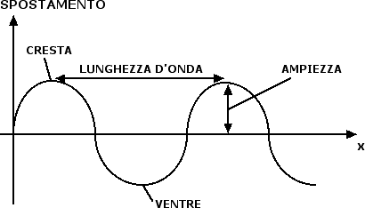
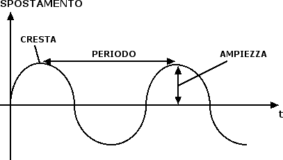

Onde e suoni
Caratteristiche di un'onda periodica
Come abbiamo accennato parlando dei modelli di luce, accanto al modello di Newton che considerava la luce come un insieme di particelle che si propagano in linea retta descrivendo dei raggi luminosi, c'era anche la proposta di Huygens di descrivere la luce in termini di onde. Prima di vedere perché possiamo pensare alla luce come a un'onda, vogliamo però descrivere le principali caratteristiche di un'onda.
Per semplicità ci limiteremo a considerare onde armoniche: si tratta di onde il cui profilo può essere disegnato seguendo l'evoluzione dell'ordinata di un punto che descrive un moto circolare uniforme lungo una circonferenza centrata nell'origine di un diagramma cartesiano. Questa è una categoria particolarmente importante di onde perché vale un principio di sovrapposizione in base al quale ogni onda può essere scritta come la somma di un certo numero di onde armoniche. Pertanto, le onde armoniche sono i mattoni elementari in termini dei quali possiamo scrivere ogni altra onda.
Per descrivere un'onda abbiamo due possibilità. La prima è quella di fare una fotografia dell'onda a un certo istante di tempo:

Tale fotografia consente di valutare il profilo dell'onda: i punti più alti dell'onda prendono il nome di creste, i punti più bassi dell'onda prendono il nome di ventri. La distanza tra due creste successive o tra due ventri successivi prende il nome di lunghezza d'onda e solitamente si indica con la lettera greca lambda (λ). L'altezza raggiunta da una cresta o la profondità raggiunta da un ventre prendono invece il nome di ampiezza dell'onda.
L'altra possibilità che abbiamo per descrivere un'onda è quella di concentrarci su uno dei suoi punti e seguirne l'andamento in funzione del tempo. Ad esempio potremmo prendere una boa sul mare e seguire nel tempo la sua oscillazione attorno al punto di equilibrio:

Il grafico è simile al precedente. In questo caso è possibile definire il periodo T dell'onda come l'intervallo di tempo che separa una cresta dalla successiva. L'inverso del periodo prende anche il nome di frequenza. La relazione che intercorre tra frequenza e periodo è la stessa che avevamo incontrato nel caso del moto circolare uniforme, ossia f = 1 / T. In un intervallo di tempo pari al periodo T l'onda percorre uno spazio pari alla sua lunghezza d'onda λ. Pertanto la velocità dell'onda v è data dalla seguente formula matematica: v = λ / T che può anche essere riscritta in termini della frequenza come: v = λ · f.
Prima di procedere, vogliamo sottolineare come in un'onda quella che si propaga è la perturbazione, non la materia che continua ad oscillare attorno alla propria posizione di equilibrio. Un buon esempio in questo senso è costituito dalla ola del pubblico allo stadio: pur non muovendosi dal posto che occupano, gli spettatori sono in grado di far propagare, con il movimento delle loro braccia, la ola da un punto all'altro delle gradinate. In questo caso gli elementi del mezzo materiale oscillano in maniera perpendicolare alla direzione del moto di propagazione dell'onda e l'onda si dice trasversale. Quando invece gli elementi del mezzo materiale oscillano nella stessa direzione in cui si propaga l'onda, l'onda si dice longitudinale: un esempio è costituito da una molla la cui estremità viene spostata rapidamente avanti ed indietro.